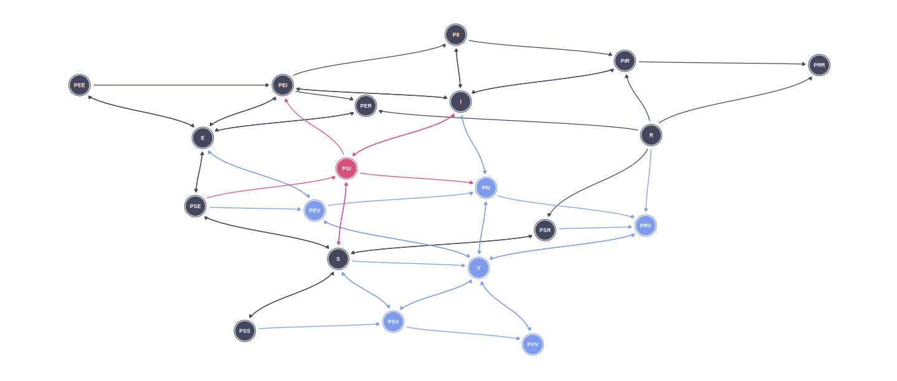

Modelling a vaccination campaign against monkeypox in Mexico
Introduction
Data
Monkeypox cases
Weekly incident cases were obtained from the reports of the General Directorate of Epidemiology of Mexico (Secretaría de Salud 2022).
Parameter information
Model
Our model is a pair-formation Susceptible-Exposed-Infected-Recovered (SEIR) system of differential equations adapted from Betti, Farrell, and Heffernan (2022). Briefly, in pair formation models the infection is driven by the rate of partnership formation between individuals and transmission probabilities per sexual act within the partnership Kretzschmar and Heijne (2017). In these models, single individuals (individuals that don’t form partnerships) don’t get infected nor infect others. Individuals within partnerships only get infected with a probability \(\phi\) if the other individual within that partnership is infected already.

The variables of the model are specified in Table 1.
| Variable | Definition |
|---|---|
| \(S\) | Single susceptible individuals |
| \(E\) | Single exposed individuals |
| \(I\) | Single infected individuals |
| \(R\) | Single recovered individuals |
| \(V\) | Single vaccinated individuals |
| \(P_{kl}\) | Partnership of two individuals in which one partner belongs to category \(k\) and the other to category \(l\) (e.g. \(P_{SI}\) represents a partnership between a susceptible \(S\) and an infected \(I\) individual). |
The differential equations representation for the model is: \[ \begin{align} \frac{dS}{dt} &= -(\rho + \nu) S + \sigma (2 P_{SS} + P_{SE} + P_{SI} + P_{SR} + P_{SV})\\ \frac{dE}{dt} &= -(\rho + \theta) E + \sigma (P_{SE} + 2 P_{EE} + P_{EI} + P_{ER} + P_{EV})\\ \frac{dI}{dt} &= -(\rho + \delta) I + \theta E + \sigma (P_{SI} + P_{EI} + 2P_{II} + P_{IR} + P_{IV}) \\ \frac{dR}{dt} &= - \rho R + \delta I + \sigma (P_{SR} + P_{ER} + P_{IR} + 2 P_{RR} + P_{RV}) \\ \frac{dV}{dt} &= - \rho V + \nu S + \sigma (P_{SV} + P_{EV} + P_{IV} + P_{RV} + 2 P_{VV}) \\ \frac{dP_{SS}}{dt} &= \frac{1}{2}\rho \frac{S^2}{N} - (\sigma + 2 \nu) P_{SS} \\ \frac{dP_{SE}}{dt} &= \rho \frac{SE}{N} - (\sigma + \theta + \nu) P_{SE} \\ \frac{dP_{SI}}{dt} &= \rho (1 - h) \frac{SI}{N} + \theta P_{SE} - (\sigma + \phi h + \delta + \nu) P_{SI} \\ \frac{dP_{SR}}{dt} &= \rho \frac{SR}{N} + \delta P_{SI} - (\sigma + \nu) P_{SR} \\ \frac{dP_{SV}}{dt} &= \rho \frac{SV}{N} + 2 \nu P_{SS} - (\sigma + \nu) P_{SV} \\ \frac{dP_{EE}}{dt} &= \frac{1}{2} \rho \frac{E^2}{N} - (\sigma + 2 \theta) P_{EE} \\ \frac{dP_{EI}}{dt} &= \rho \frac{EI}{N} + \rho h \frac{SI}{N} + \phi h P_{SI} + 2 \theta P_{EE} - (\sigma + \theta + \delta) P_{EI} \\ \frac{dP_{ER}}{dt} &= \rho \frac{ER}{N} + \delta P_{EI} - (\sigma + \theta) P_{ER} \\ \frac{dP_{EV}}{dt} &= \rho \frac{EV}{N} + \nu P_{SE} - (\sigma + \theta) P_{EV} \\ \frac{dP_{II}}{dt} &= \frac{1}{2} \rho \frac{I^2}{N} + \theta P_{EI} - (\sigma + 2 \delta) P_{II} \\ \frac{dP_{IR}}{dt} &= \rho \frac{IR}{N} + 2 \delta P_{II} + \theta P_{ER} - (\sigma + \delta) P_{IR} \\ \frac{dP_{IV}}{dt} &= \rho \frac{IV}{N} + \theta P_{EV} + \nu P_{SI} - (\sigma + \delta) P_{IV} \\ \frac{dP_{RR}}{dt} &= \frac{1}{2} \rho \frac{R^2}{N} + \delta P_{IR} - \sigma P_{RR} \\ \frac{dP_{RV}}{dt} &= \rho \frac{RV}{N} + \delta P_{IV} + \nu P_{SR} - \sigma P_{RV} \\ \frac{dP_{VV}}{dt} &= \frac{1}{2} \rho \frac{V^2}{N} + \nu P_{SV} - \sigma P_{VV} \\ \end{align} \tag{1}\]
With the parameters and their meanings are established in Table 2. As the model was fitted using a Bayesian framework, prior distributions for the parameters are also specified in Table 2.
| Parameter | Definition |
|---|---|
| \(\rho\) | Partnership formation rate |
| \(\sigma\) | Partnership dissolution rate |
| \(\nu\) | Vaccination rate |
| \(\theta\) | Incubation rate |
| \(\delta\) | Infection recovery rate |
| \(h\) | Probability of transmission per contact |
| \(\phi\) | Contact rate per partnership |
Code availability
Both the code and the data can be found in our Github repository